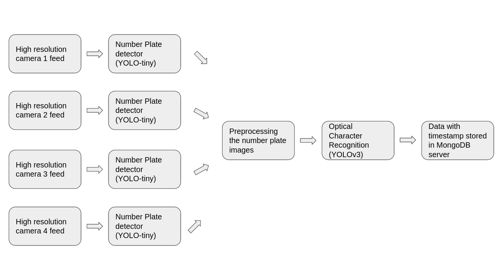
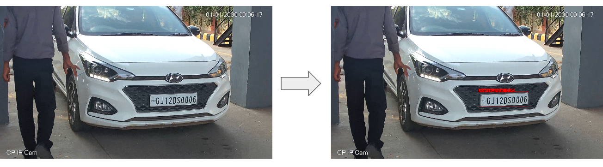
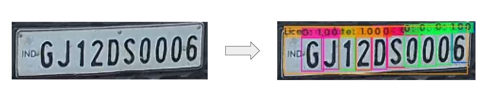

Problem statement:
With an increased number of vehicles passing by the SEZ, there is a need for a vehicle identification mechanism that is effective, affordable, and efficient. Manual data logging is a slow, tedious, and primitive method. Since the system is manual, there is always some scope of connivance by security personnel. There are also increased insecurity challenges including smuggling and terrorism which call for increased surveillance.
Approach:
Earlier, a primitive manual approach is used for the registration of new vehicles entering the SEZ, which involves writing down the details of the vehicles and providing each vehicle with a gate pass. This process of writing is tedious and time-consuming and is prone to inaccurate recordings, furthermore, the backup and sharing of this vehicle information are difficult because the data is saved in hard copy. The earlier approach often leads to traffic congestion and chaos on the gateway that hinders the productivity of SEZ industries.
With the rapid increase in cars and transportation systems which make it impossible to be fully managed and monitored by humans, we propose an Automatic number plate recognition system. Automatic number plate recognition (ANPR) is an image processing technology that uses a number (license) plate to identify the vehicle. The objective is to design an efficient automatic authorized vehicle identification system by using the vehicle number plate. The developed system first detects the vehicle and then captures the vehicle image. The vehicle number plate region is extracted using the image segmentation in an image. This data is then transferred to the central hub. All the data will be stored in a MongoDB server that can be accessed by the officials whenever required. If an intruder or non-registered vehicle tries to enter the zone it updates the data and informs the authority about the intrusion
Solution:
Automatic Number Plate Recognition (ANPR) is a computer vision system capable of reading vehicle number plates and detecting characters within it with zero human intervention.
When a vehicle crosses the security gates, The system first detects the vehicle and then captures the vehicle image, and using some deep learning magic, it detects the number plate of the vehicle.
The ANPR pipeline consists of 2 major object detection algorithm
- YOLO-tiny for number plate detection 
- YOLOv3 as OCR to extract characters from the number palet. 
We used a pre-trained YOLO-tiny model for vehicle and number plate detection. The Model takes the camera feed as input and provides the 4 coordinates of the bounding box generated over the number plate. Using these coordinates the system crops the number plate image from the live stream frame. The cropped image is then pre-processed with various image processing techniques to make it ready to feed into the OCR
We trained a custom OCR using YOLOv3 architecture and our ingenious dataset. We tried to use pre-trained OCRs like Pytesseract and EasyOCR but they gave a very low accuracy score. Thus we trained our own OCR according to our requirements. We choose YOLOv3 because it is good at detecting small characters which match our requirements. The model takes preprocessed number plate as input and outputs the prediction score and bounding box coordinates of all the characters it recognized in the number plate image. The recognized characters are checked for threshold confidence of 90%, the characters that pass the threshold are then arranged into a string according to their center point coordinates. The string is then passed from a Regex to make sure that the string is following the Indian Number Plate formate.
The final generated string of number plate characters is then passed to the MongoDB server with a timestamp, gate number, and in-out state. The server allows the user to get all the timing history of any number plate. Also, the database is linked with the earlier database that can help us get the id associated with the number plate, If no ID is associated with the number plate then it triggers a warning to the user.
Challenges:
The need for ANPR in KASEZ is strong. However, the solution may not be as clear. ANPR in countries such as Vietnam, Australia, and Italy, which have fairly standardized license plates, have accuracy levels often exceeding 90%. India, however, is quite different. The variations of Indian license plates make it difficult for an ANPR system to accurately identify and decode the license plate. Also, the lack of a dataset is a big issue, no model can be accurate with insufficient data
Moreover, cameras deployed in India tend to be of lower quality, thereby compounding the ability of ANPR engines to accurately decode the license plate. The low-cost cameras have limited visual coverage, are equipped with less acute motion and object detection sensors, and contain limited night vision capabilities. These three factors increase the number of blind spots and the occurrence of blurry images. ANPR for India is particularly difficult, and accuracy rates seldom exceed 70% from our internal analysis of our and competitive ANPR providers.